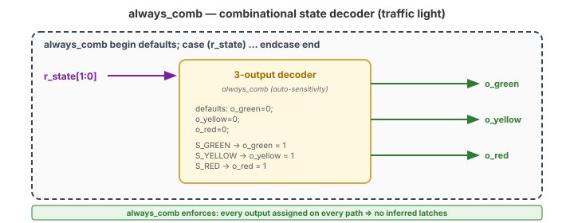
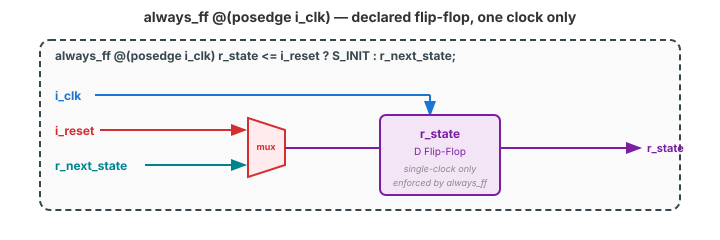
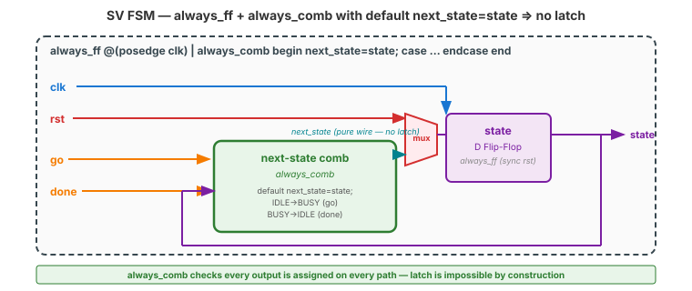
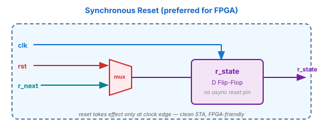
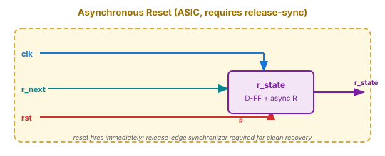

🌍 Where This Lives
In Industry
Every mature Verilog/SV style guide — Xilinx UG901, Intel Quartus Handbook, Synopsys RTL Coding Guidelines, lowRISC style guide — mandates always_ff, always_comb, and always_latch for RTL. Lint tools (Verilator --lint-only, Spyglass, Real Intent) flag legacy always @(*) as a violation. Code review rejects it. The transition is universal and settled.
In This Course
From Topic 13 on, all new code uses the intent-based variants. Topic 14 assertions work best with them. Your capstone and any senior-design code will use them. Your Week 1-3 modules can be modernized in a batch — one line per always block, mechanical.
⚠️ “It's Just a Style Preference”
❌ Wrong Model
“always_comb is just always @(*) with a fancy name. Same behavior, it's just a style preference. My old code is fine.”
✓ Right Model
The intent-based variants impose new semantic restrictions. always_comb requires that the block produce pure combinational logic — no latches, no flops. always_ff requires that the block produce only flip-flops (one clock edge, no latches). always_latch actively declares “I want a latch.” The compiler enforces these rules. Same hardware in the common case, but the common bugs become compile errors.
always @(*) → silent. Same bug inside always_comb → loud compile-time warning. That's a real, tangible difference, not a style preference.
👁️ I Do — The Three Variants
| Keyword | Meaning | Forbids |
|---|---|---|
always_comb | Pure combinational logic | Latches, flops, partial assignment (missing defaults) |
always_ff @(posedge clk) | Edge-triggered flip-flops | Multiple clocks in one block, combinational paths, latches |
always_latch | Level-sensitive latch (you asked for it) | Flops, combinational, multiple levels |
always @(*) | Any of the above | Nothing — permits all bugs |
always @(posedge clk) | Any of the above | Nothing — permits all bugs |
always blocks are “trust me, I know what I'm doing.” Intent variants are “I'm declaring my intent; enforce it for me.” In a field where latent bugs reach silicon and cost millions of dollars, that's a trade everyone wants to make.
🤝 We Do — always_comb
// SV: declared combinational. Compiler checks.
always_comb begin
// Defaults at top (SV enforces full assignment)
o_green = 1'b0; o_yellow = 1'b0; o_red = 1'b0;
case (r_state)
S_GREEN: o_green = 1'b1;
S_YELLOW: o_yellow = 1'b1;
S_RED: o_red = 1'b1;
default: ; // required
endcase
end
always_comb adds two superpowers over always @(*):
- Auto-sensitivity: the block wakes on any signal read inside, no stale list to maintain.
- Latch prevention: the compiler warns if any path through the block fails to assign every output.
🤝 We Do — always_ff
// SV: declared flip-flop. One clock.
always_ff @(posedge i_clk) begin
if (i_reset) r_state <= S_INIT;
else r_state <= r_next_state;
end
always_ff forbids:
- Multiple clock edges in one block (no
@(posedge clk1 or posedge clk2)— common CDC bug) - Combinational assignments mixed with sequential (no
always_ff @(posedge clk or sel)) - Blocking assignments (
=instead of<=) — warning
always blocks. always_ff catches them at elaboration.
🧪 You Do — Modernize an FSM
// Verilog-2001 — has a latent latch
always @(posedge clk or posedge rst)
if (rst) state <= IDLE;
else state <= next_state;
always @(*) begin
case (state)
IDLE: if (go) next_state = BUSY;
BUSY: if (done) next_state = IDLE;
default: next_state = IDLE;
endcase
end
Rewrite in SV. Note the bug the SV version exposes.
always_ff @(posedge clk) begin // sync reset
if (rst) state <= IDLE;
else state <= next_state;
end
always_comb begin
next_state = state; // DEFAULT — was missing!
case (state)
IDLE: if (go) next_state = BUSY;
BUSY: if (done) next_state = IDLE;
default: next_state = IDLE;
endcase
end
always @(*) was missing the default next_state = state. always_comb warns about the missing assignment — revealing a latent latch.
🔧 Synchronous vs Asynchronous Reset
SYNCHRONOUS RESET (prefer)
always_ff @(posedge clk) begin
if (rst) r_state <= S_INIT;
else r_state <= r_next;
end
Reset applies at the clock edge. Cleanest timing. FPGA-preferred.
ASYNCHRONOUS RESET
always_ff @(posedge clk
or posedge rst) begin
if (rst) r_state <= S_INIT;
else r_state <= r_next;
end
Reset takes effect immediately. Needed in some ASIC flows. Requires release-edge sync — tricky.
always_ff). Asynchronous reset only if you've been told specifically you need it.
🤖 Check the Machine
Ask AI: “Here's my FSM with always @(*) and always @(posedge clk). Convert it to SV using always_comb and always_ff, and tell me if the conversion exposes any latent bugs.”
TASK
AI migrates + audits for latent bugs.
BEFORE
Predict: convert keywords, check for missing defaults, check for mixed-clock always blocks.
AFTER
Strong AI calls out defaults it had to add. Weak AI silently adds them without noting.
TAKEAWAY
Ask explicitly for bugs exposed — it's the migration's hidden value.
Key Takeaways
① always_comb enforces combinational: no latches, no flops, no missing defaults.
② always_ff @(posedge clk) enforces flip-flop: single clock, <=, no mixed logic.
③ always_latch exists for when you genuinely want a latch — a declaration of intent.
④ Migration often exposes latent bugs. That's a feature, not a nuisance.
🔗 Transfer
enum · struct · package
Video 4 of 4 · ~10 minutes
▸ WHY THIS MATTERS NEXT
You've been writing state machines with localparam state lists. Video 4 replaces them with typedef enum — named state types that the compiler checks. Plus structs for bundled signals and packages for shared types. These are the features that let your module library look like a real engineering codebase.